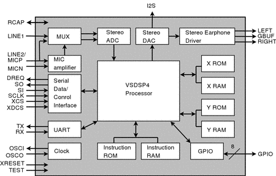

VS1053 — чип аудиокодека Ogg Vorbis/MP3/AAC/WMA/FLAC/MIDI

Введение
VS1053 — это универсальный «чип декодера MP3», входящий в обширное семейство подчиненных аудиопроцессоров VLSI Solution. Помимо возможности декодировать все наиболее распространенные аудиоформаты, включая расширенные функции новых файлов AAC, функциональность этой микросхемы может быть значительно расширена простой загрузкой небольшого количества дополнительного программного обеспечения в ее оперативную память. Помимо возможности декодировать все основные аудиоформаты, VS1053 способен записывать в трех различных аудиоформатах, от 16-битного PCM без потерь до сильно сжатых, но высококачественных файлов Ogg Vorbis. Для наилучшего прослушивания через наушники VS1053 включает пространственную обработку EarSpeaker, которая точно имитирует звучание комнаты со стереодинамиками. Эту опцию можно отключить при необходимости. В целом, VS1053 — это простая в использовании, мощная рабочая лошадка для приложений воспроизведения и записи звука.
Функции
- Декодирует несколько форматов
- Огг Ворбис
- MP3 = MPEG 1 и 2 аудио слой III (CBR+VBR+ABR)
- MP1 и MP2 = MPEG 1 и 2 аудиослои I и II по желанию
- MPEG4 / 2 AAC-LC(+PNS), HE-AAC v2 (Уровень 3) (SBR + PS)
- WMA4.0/4.1/7/8/9 все профили (5-384 кбит/с)
- Аудио FLAC без потерь с программным плагином (до 24 бит, 48 кГц)
- WAV (PCM + IMA ADPCM)
- Общий формат MIDI 1 / SP-MIDI 0
- Кодирует три различных формата с микрофонного/линейного входа в моно или стерео
- Поддержка потоковой передачи
- Пространственная обработка звука EarSpeaker
- Регуляторы низких и высоких частот
- Работает с одной тактовой частотой 12-13 МГц или 24-26 МГц
- Внутренний множитель тактовой частоты ФАПЧ
- Работа в режиме низкого энергопотребления
- Высококачественный встроенный стерео ЦАП без фазовой ошибки между каналами
- Обнаружение перехода через ноль для плавного изменения громкости
- Стереофонический драйвер для наушников, способный выдерживать нагрузку 30 Ом
- Тихое включение и выключение
- Интерфейс I2S для внешнего ЦАП
- Раздельные напряжения для аналоговых, цифровых сигналов, входов/выходов
- 16,5 КБ встроенной оперативной памяти для пользовательского кода и данных
- Последовательные интерфейсы управления и передачи данных
- Может использоваться как подчиненный сопроцессор
- Загрузка флэш-памяти SPI для специальных приложений
- UART для отладки
- Новые функции могут быть добавлены с помощью программного обеспечения и до 8 контактов GPIO.
Варианты продукта
|
Идентификатор устройства (код заказа) |
MP3-декодер |
Ogg Vorbis Enc. (плагин) |
Огг Ворбис Дек. |
HE-AAC Декабрь. |
WMA декабрь. |
Flac Дек. (плагин) |
МИДИ Декабрь. |
|
VS1053B-L |
Х |
Х |
Х |
Х |
Х |
Х |
Х |
|
VS8053B-L |
|
Х |
Х |
|
|
Х |
Х |
Упаковка